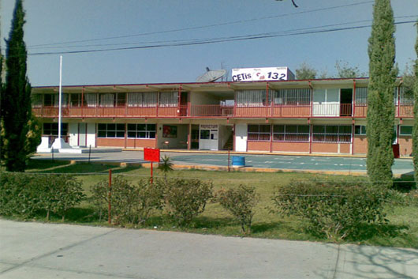

Informacion de la materia y de la Institucion
 El centro educativo publico CETIS 132 ofrece el servicio del tipo Bachillerato Tecnico y se ubica en un ambiente urbano del municipio de Chiautempan del estado de Tlaxcala. El instituto de educacion media superior de turno matutino, vespertino tiene la clave oficial 29DCT0001L
Dirección: Calle Progreso Sur No 35, Santa Cruz Guadalupe, 90810 Chiautempan, Tlax.
Teléfono: 246 464 0296
Horario: Lunes - Viernes 7:00am a 20:00 pm
Aprobada por la direccion general de educación Tecnologica Industrial y de Servicios.
Dirección Academica e Innovacion Educativa.
Subdireccion de Innovación y Superacion Academica.
Cuadernillo de Aprendizaje Esenciales.
Quinto Semestre
Ciencia, Tecnología,Sociedad y Valoresx
La asignatura de Ciencia, Tecnología, Sociedad y Valores, busca que los jóvenes cuenten con una panorámica sobre las principales disciplinas sociales, a través de la cual puedan analizarse diversos problemas sociales, e identifiquen aquellos que afectan su comunidad, combinando diferentes enfoques interdisciplinarios para resolverlos, a fin de que contribuyan como ciudadanos críticos y participativos, en la sociedad contemporánea.
Aprendizajes esperados - 1er. parcial1. Las ciencias sociales y su campo de estudio.
2. Métodos de investigación
1. Estructura y cambio social y modos de producción.
2. Modelos económicos en México y su relación con: Demografía / Migración.
3. Modelos económicos en México y su relación con: Estratificación socioeconómica: discriminación / racismo.
4. Modelos económicos en México y su relación con: Medio Ambiente.
5. Modelos económicos en México y su relación con: Urbanización.
6. Modelos económicos en México y su relación con: Sistemas políticos y su representación Regímenes democráticos, autoritarios, totalitarios.
1. Modelos económicos en México y su relación con: Sistemas políticos y su representación División de poderes: ejecutivo, legislativo y judicial.
2. Modelos económicos en México y su relación con: Cambio político.
3. Modelos económicos en México y su relación con: Cambio social.
4. Modelos económicos en México y su relación con: Desafíos sociales.
5. Modelos económicos en México y su relación con: Revolución digital.